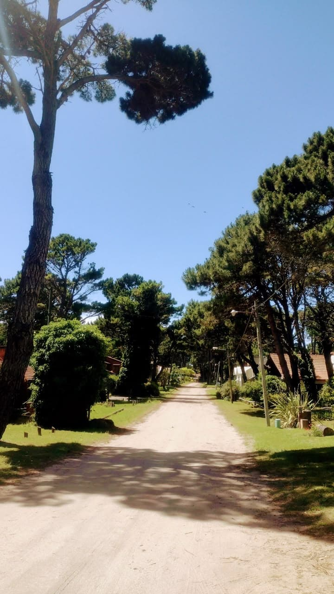
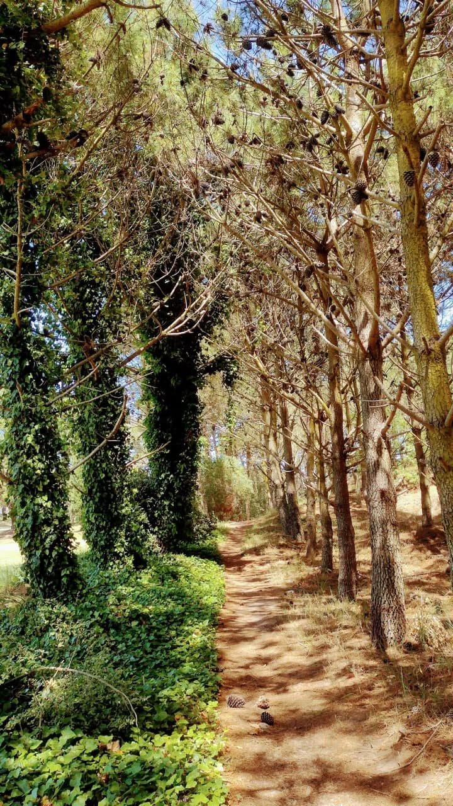
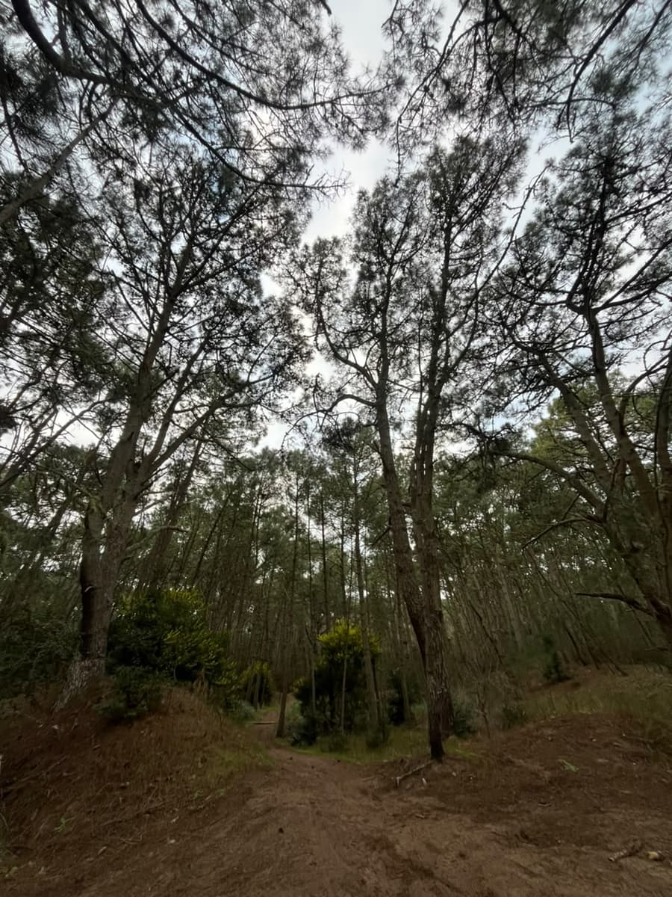
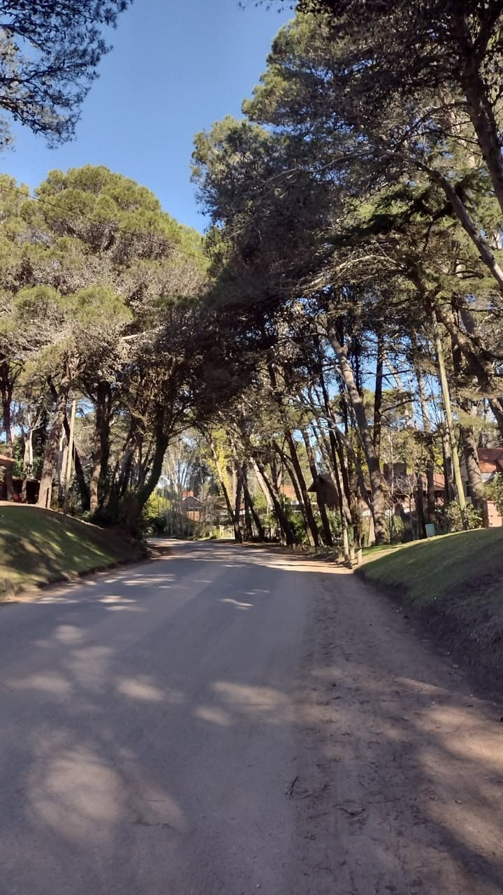
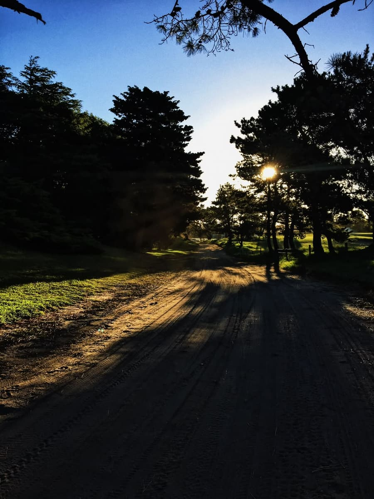
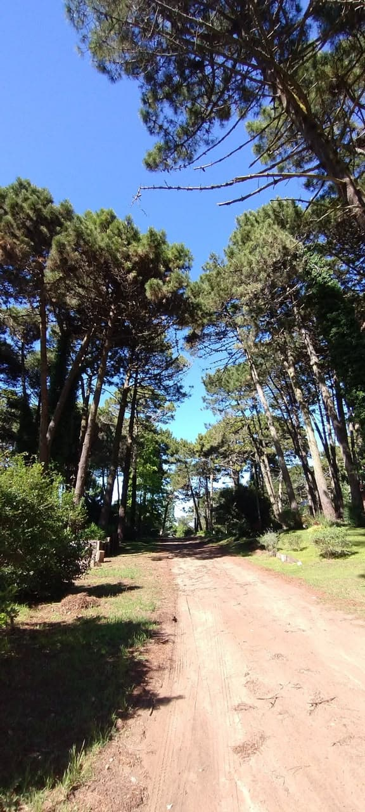
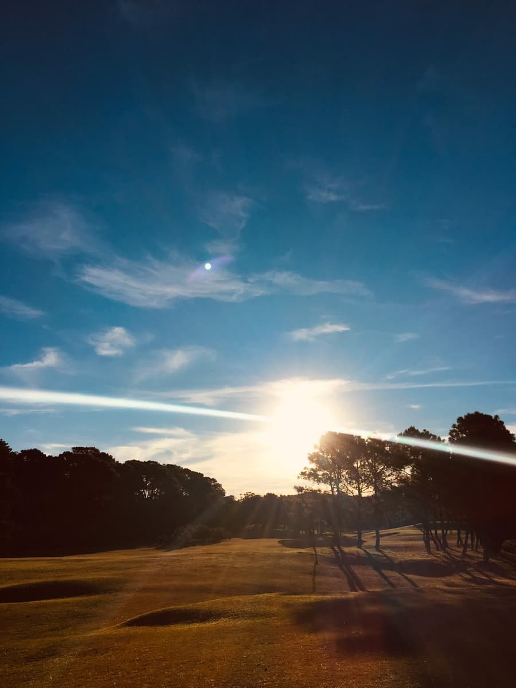
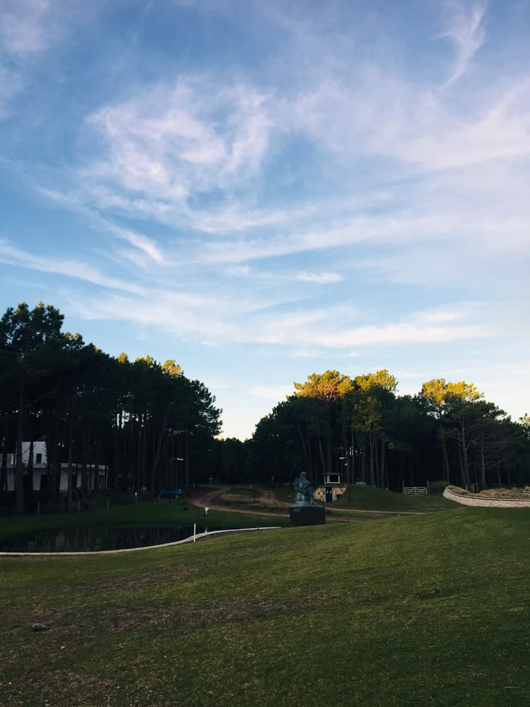

Cuando el sol empieza a bajar, Pinamar cambia de ritmo. La gente vuelve de la playa, se baña, sale a caminar o se junta a tomar unos mates. La luz se pone más naranja, el viento se calma un poco y las calles arboladas se llenan de bicis.
Es el momento ideal para bajar un cambio entre el día de playa y la salida de la noche. Por eso para esta etapa elegimos el bosque, que es el lugar más tranquilo de la ciudad y uno de los que mejor cuenta su historia.
En esta parada
Horario sugerido: 17 a 20 h
Duración: 1 a 2 horas
Costo: gratis
Para quién: familias y los que quieren descansar
Qué llevar: repelente, el mate y zapatillas cómodas

Después de la playa y los médanos, esta parada es para descansar un poco. El bosque es parte de la
identidad de Pinamar, tanto que el nombre de la ciudad sale de juntar "pino" y "mar".
Lo que más nos gusta de esta parada es que es un plan tranquilo, gratis y que puede hacer
cualquiera. El sendero es de material, así que también lo pueden recorrer personas con dificultades
motoras.
Abajo de los pinos hace más fresco y casi no se siente el viento, así que después de un día de sol es un alivio. Mucha gente va con el mate, una manta o la bici y se queda un rato largo.
Además, el bosque cuenta la historia de la ciudad: todo lo que ves fue plantado a mano sobre lo que antes eran médanos. Caminar por acá es una forma de entender cómo nació Pinamar.
La historia del bosque
Cuando caminás entre los pinos cuesta creer que todo esto antes era arena. Así fue cómo pasó:
Fines de los años 30. El arquitecto Jorge Bunge imagina una ciudad balnearia que una el
mar con el verde.
1941. Se empiezan a fijar los médanos y a plantar árboles a gran escala, con métodos
que nunca se habían usado en el país.
14 de febrero de 1943. Se inaugura Pinamar como balneario.
Hoy. Ya se plantaron más de seis millones de árboles.

El sendero
El sendero va por el Camino Parque de los Pioneros, al lado de la avenida del mismo nombre. Empieza
en la escultura "La Permanencia de un Sueño", que todos conocen como La Piña, y termina en el
Barrio Pioneros, al norte de la ciudad.
Ida y vuelta son 9,3 km, pero es fácil y tiene salidas en el medio por si querés hacerlo más
corto.
El camino es plano y está marcado, así que no hay forma de perderse. Lo usan tanto los que caminan como los que andan en bici o salen a correr, por eso conviene ir por el costado y estar atento.
A lo largo del recorrido hay lugares con sombra para frenar y descansar. A la tarde, con el sol bajo, la luz que entra entre los árboles hace que sea uno de los momentos más lindos para recorrerlo.
Lo que más se siente al entrar al bosque es el cambio de temperatura. Después de un día de sol en la playa, abajo de los pinos está más fresco y hay mucho menos viento. También cambia el ruido: en vez del mar se escuchan los pájaros y las bicis que pasan.
Nosotros recomendamos hacer el sendero a la tarde, cuando el sol ya está bajo y la luz entra entre los árboles. Si no tenés ganas de hacerlo entero, podés hacer un tramo y volver por alguna de las salidas que tiene en el medio.
Qué hacer
Paseo a pie o en bici
Se puede hacer el sendero completo o solo un pedazo, como más les guste.
Picnic y mates
Llevar algo para comer y sentarse un rato abajo de los pinos.
Ir a merendar
Al terminar el paseo, merendar en algún lugar del centro antes de la noche.
Salir a correr
Es plano y con sombra, ideal para correr un rato.
Cabalgata
Las cabalgatas con guía son un clásico de la zona.
Fotos del atardecer
A esta hora la luz entre los pinos queda muy linda.
Dato: el sendero arranca sobre la Av. Bunge, así que desde acá es muy fácil seguir con la
última parada del día.
Para cerrar la tarde, nada mejor que una merienda. En el centro hay varios lugares para tomar algo antes de que empiece la noche, y si fuiste preparado, también se puede tomar mate en el mismo bosque.
El sendero en números
Largo
Dificultad
Duración
Costo
Abierto
9,3 km ida y vuelta
Fácil
1 a 2 horas
Gratis
Todo el año
Recomendaciones
Salir antes de que oscurezca, mejor ir a la tarde.
Llevar repelente, sobre todo en verano.
No dejar basura y no hacer fuego.
Tener cuidado con las bicis, porque el sendero lo usan peatones y ciclistas.
Zapatillas cómodas.
Una aclaración: el bosque está muy cuidado y es parte de la historia de la ciudad. Por eso está prohibido hacer fuego y es importante no dejar basura. Si llevás algo para comer, llevate también una bolsa para los residuos.
Más fotos






Dónde queda
Ubicación aproximada.
Desde el bosque se sigue por la Av. Bunge, la avenida que lleva el nombre del fundador, hacia el centro y
el mar. Si querés hacer la cabalgata, la podés
reservar desde acá.